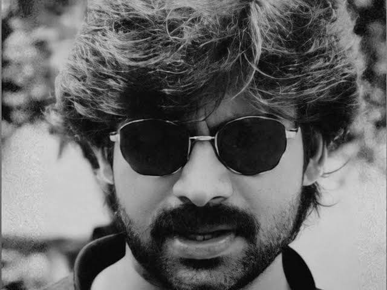

Tribute to Pawan Kalyan
Pawan Kalyan, born on September 2, 1971, as Konidela Kalyan Babu, is a renowned actor and politician in the Telugu film industry. Fondly known as "Power Star," he is the younger brother of legendary actor Chiranjeevi. Pawan Kalyan made his acting debut in the 1996 Telugu film "Akkada Ammayi Ikkada Abbayi" and quickly rose to fame with his exceptional acting skills and unique screen presence. Beyond the glitz of the film industry, Pawan Kalyan's entry into politics marked a turning point in his career. His decision to found the Jana Sena Party showcased his commitment to serving society and bringing about positive change. As a political leader, Pawan Kalyan's ideologies and principles revolve around the welfare of the common people. He has consistently advocated for social justice, economic empowerment, and rural development. His speeches resonate with the masses, as he fearlessly addresses critical issues plaguing society and strives to bring about systemic change. Pawan Kalyan's political journey has been marked by highs and lows, yet he remains undeterred in his commitment to the welfare of the people. He actively campaigned during elections, both in Andhra Pradesh and Telangana, and extended his support to like-minded political alliances.